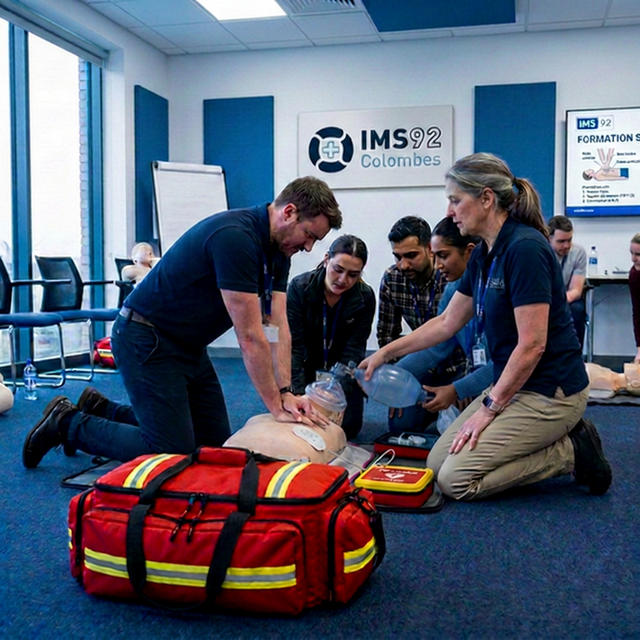

Formez-vous aux métiers du Sauvetage et du Secourisme
L'IMS 92 vous accompagne dans l'acquisition de compétences en secourisme. Des formations professionnelles de qualité encadrées par des experts passionnés.
Qui sommes-nous ?
L'Institut des Métiers du Sport 92
L'IMS 92 est un organisme de formation de premier plan spécialisé dans les domaines du secourisme et du sauvetage aquatique. Notre mission est de former des citoyens, des professionnels et des équipes aux gestes qui sauvent et à la prévention des risques.
Nous intervenons auprès des entreprises, des collectivités et des particuliers pour dispenser des formations reconnues par l'État. Que ce soit pour devenir sauveteur aquatique (BNSSA, BSB), intervenir en équipe de secours (PSE) ou assurer la sécurité au sein de votre entreprise (SST), nos formateurs certifiés vous préparent efficacement à réagir face à l'urgence.
- ✓ Formateurs expérimentés et certifiés
- ✓ Matériel pédagogique moderne et adapté
- ✓ Accompagnement personnalisé
- ✓ Taux de réussite exceptionnel

Toutes nos formations
Des parcours adaptés à vos objectifs, du secourisme civique à l'expertise professionnelle aquatique.
SANTÉ & SÉCURITÉ AU TRAVAIL ET CIVIQUE
PSC
Prévention et Secours CiviquesApprenez les gestes de premiers secours pour réagir face à des situations de la vie quotidienne (Malaise, traumatismes, etc).
Voir les sessionsSST
Sauveteur Secouriste du TravailFormation indispensable en entreprise : devenez le premier maillon de la chaîne des secours sur votre lieu de travail et acteur de la prévention.
Voir les sessionsMAC SST
Maintien et ActualisationRenouvelez vos compétences de Sauveteur Secouriste du Travail (obligatoire tous les 24 mois) pour rester opérationnel et à jour.
Voir les sessionsSECOURISME EN ÉQUIPE
PSE 1 & 2
Premiers Secours en ÉquipeFormations qualifiantes pour intervenir au sein d'un poste de secours en équipe avec du matériel de réanimation et de sauvetage.
Voir les sessionsFC PSE
Formation Continue PSERecyclage annuel obligatoire pour maintenir la validité des diplômes PSE 1 et PSE 2 et réviser les nouvelles recommandations.
Voir les sessionsSÉCURITÉ ET SAUVETAGE AQUATIQUE
BNSSA
Sécurité Sauvetage AquatiqueBrevet National indispensable pour la surveillance en baignade d’accès non payant et certaines baignades aménagées. Devenez nageur-sauveteur !
Voir les sessionsFC BNSSA
Recyclage BNSSARenouvellement quinquennal du BNSSA comprenant un maintien des compétences secouristes (PSE1 minimum) et épreuves aquatiques.
Voir les sessionsBSB
Brevet Surveillant de BaignadeFormation dédiée à la surveillance des baignades en centre de vacances et de loisirs (ACM). Idéal pour les animateurs.
Voir les sessionsFC BSB
Recyclage BSBMise à jour quinquennale pour conserver les prérogatives du Brevet de Surveillant de Baignade en centre aéré.
Voir les sessionsAgenda des sessions à venir
Consultez nos prochaines dates de formations programmées.
| Formation | Dates | Lieu | Disponibilité | Action |
|---|---|---|---|---|
| Avril 2026 | ||||
| PSE 1 Secourisme en Équipe | Du 15 au 19 Avril 2026 | Centre IMS 92 | Places disponibles | S'inscrire |
| FC PSE Secourisme en Équipe | 24 et 25 Avril 2026 | Centre IMS 92 | 2 places | S'inscrire |
| Mai 2026 | ||||
| BNSSA Sauvetage Aquatique | Les Samedis de Mai 2026 | Piscine Partenaire | Dernières places | S'inscrire |
| PSC Secourisme Civique | 20 Mai 2026 | Centre IMS 92 | Places disponibles | S'inscrire |
| Juin 2026 | ||||
| PSC Secourisme Civique | 2 Juin 2026 | Centre IMS 92 | Complet | S'inscrire |
| SST Santé au Travail | 10 et 11 Juin 2026 | Intra-entreprise | Sur demande | Nous contacter |
| Septembre 2026 | ||||
| BSB Sauvetage Aquatique | Du 7 au 11 Septembre 2026 | Piscine Partenaire | Ouverture prévue | Pré-inscription |
| PSE 1 & 2 Sécurité en Équipe | 28 Sept. au 4 Octobre 2026 | Centre IMS 92 | Inscriptions ouvertes | S'inscrire |
Prêt à vous engager ?
Consultez notre planning des prochaines sessions ou contactez-nous pour organiser une formation sur-mesure au sein de votre structure.
📞 06 70 06 21 83
✉️ contact@ims92-formation.com